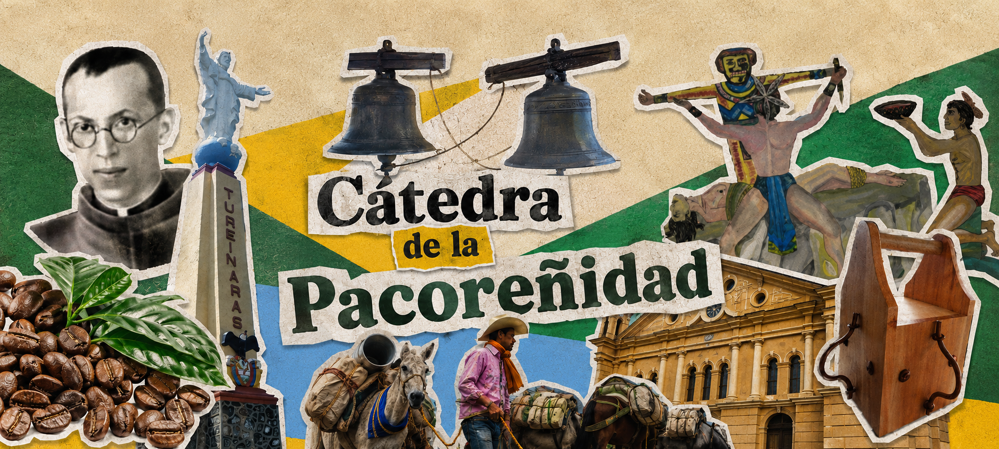

Historia de Pácora
Fundación, colonización, memoria local y acontecimientos significativos.
Repositorio Digital

Pácora, Caldas
Un espacio digital para conservar, consultar y compartir la memoria histórica, cultural, natural y educativa de Pácora.
Fundación, colonización, memoria local y acontecimientos significativos.
Arquitectura, paisaje, tradición religiosa, lugares y bienes culturales.
Documentos, cartillas, investigaciones, acuerdos y recursos académicos.
Imágenes antiguas y actuales para preservar la memoria visual del municipio.
Entrevistas, relatos, videos, audios, mitos, leyendas y tradición oral.
Material para docentes, estudiantes y proyectos de aula.
Aquí se recopilará la memoria histórica del municipio: fundación, colonización, hechos importantes y documentos relacionados.
Espacio dedicado al patrimonio arquitectónico, natural, religioso, cultural e inmaterial de Pácora.
Biografías, fotografías, documentos y relatos sobre personajes destacados del municipio.
Fotografías antiguas y actuales que conservan la memoria visual de Pácora.
Espacio para información institucional, aportes de la comunidad y contacto del proyecto.